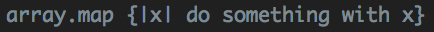
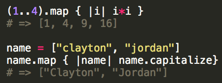
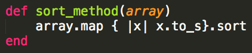

Week #4: Technical
The Map Method
Here's what ruby-doc.org has to say about the map method: Returns a new array with the result of running block once for every element in enum.
In other words, map allows you to create a new array from an old one.
Here's how the syntax would look:

Here are a few examples of how you might use it:

The first time I used the map method I was trying to sort an array of elements. The problem was that the array included both strings and integers so I couldn’t just slap a .sort on there and call it a day. I needed to go through all of the elements in the array and convert each of them to a string before I could .sort the array. My code ended up looking like this:

NOTE: this example worked fine for the array that I needed to sort but remember that once an integer has been converted to a string, it doesn’t sort the same way. For example, the string 10 is going to come before the string 2.